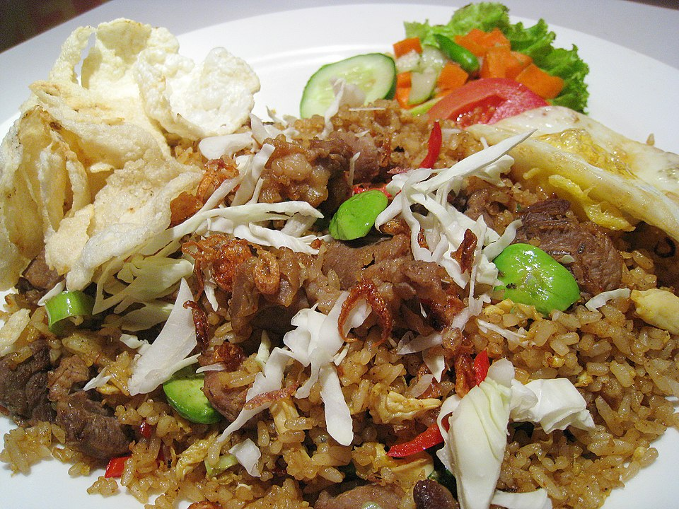

Nasi goreng

Description
Nasi Goreng, meaning "fried rice" in Indonesian, is a beloved dish known for its rich flavors and versatility. It's a comforting and aromatic meal that's quick to prepare, making it a popular choice for both street food vendors and home cooks.
Ingredients
- Cooked rice 4 cups, preferably day-old
- Eggs 2, beaten
- Garlic 3 cloves, minced
- Red chilies 2, finely chopped (adjust to taste)
- Kecap manis (sweet soy sauce) 2 tablespoons
- Vegetable oil 2 tablespoons
Steps
- Cook the eggs
- Sauté the Aromatics
- Fry the rice
- Season the rice
- Combine everything
- Serve
Back to home